Teddy Toyotome - La Maceta
Hello 👋! I’m Teddy, and I’d say these years at Long Beach have been some of the best – yet most daunting – of my life.
In both the “good” and the “bad.” But looking back this BFA really pushed me in ways I never expected. I know everyone says that but for me, I think I am fortunate to be able to live this experience! I think life puts it all into perspective for sure. Travelling as a missionary thru Australia/Africa, working as a cashier/manager, to actively pursuing a career in animation… all these things have taught me over and over that we should continue to pursue the blind spots – those nooks and crannies that we haven’t discovered yet – and let it be filled with whatever life throws our way!
This is often why all of my pieces have multiple themes to them: some have a darker “feel” whereas others have a lighthearted/whimsical touch! I try not to pigeonhole my work into a single niche, narrow genre to keep myself open to many different styles, HOWEVER my corgi (Ginger) does hoard the spotlight on occasion. But what all my stories/designs have in common remains the same: soul. I want each and every one to have something to say, something to plant audiences back to a time when films meant something to them.
I consider myself an admirer of 2D animation but identify more as an illustrator & designer! Even with not much experience in animation, I hope to publish my own books which can strike the same impact on young readers...(and hopefully pitch to become movies one day)! ❤️
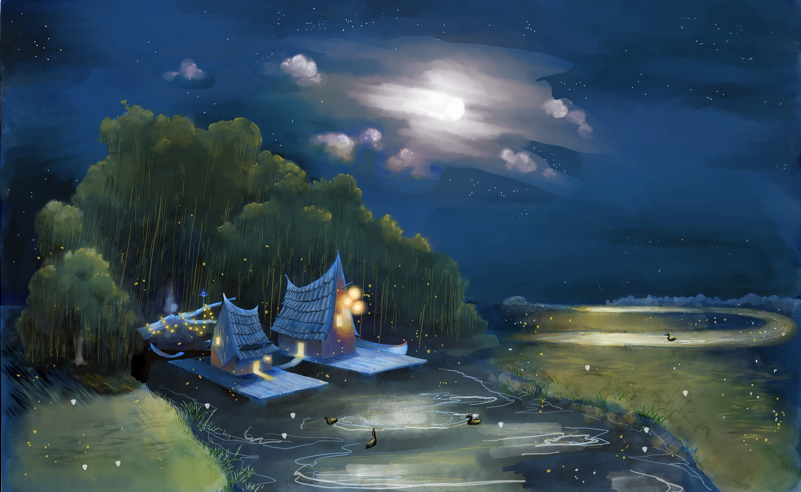
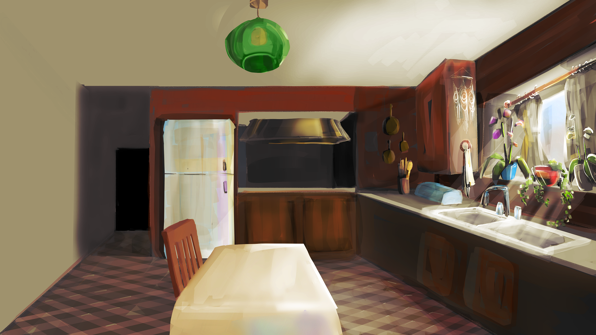
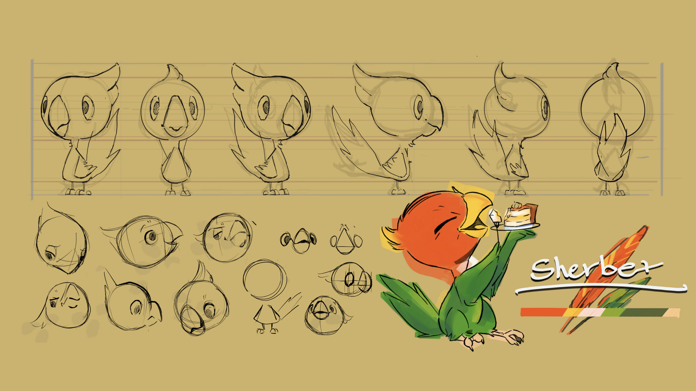
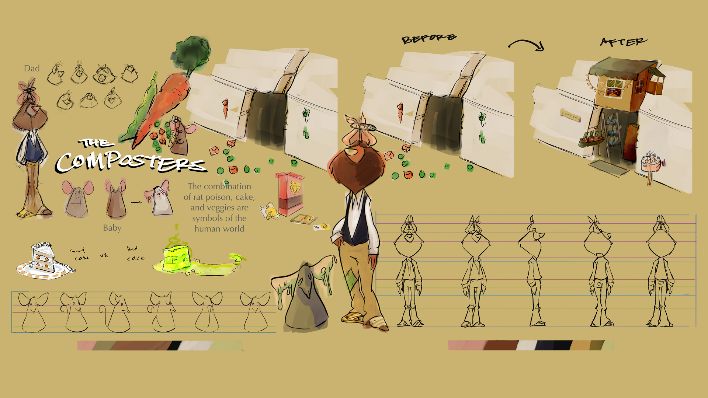
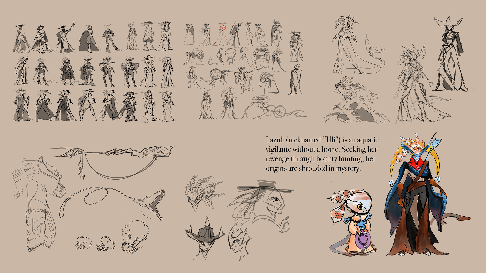
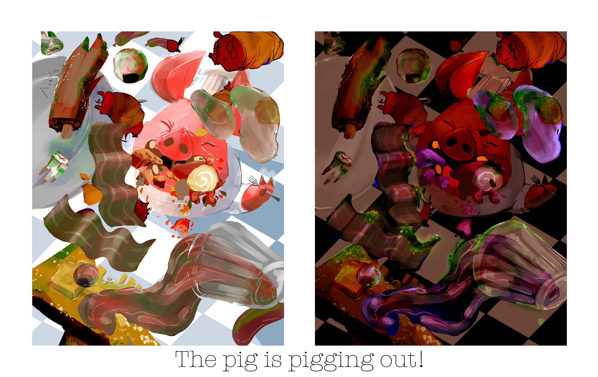
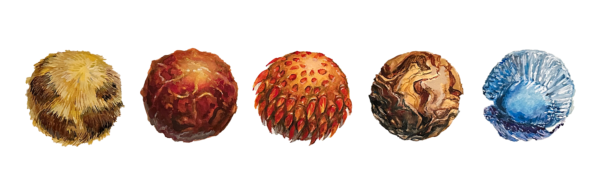
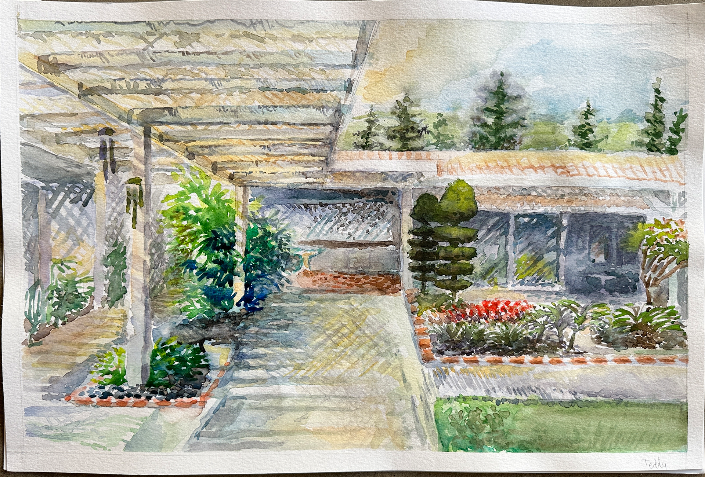
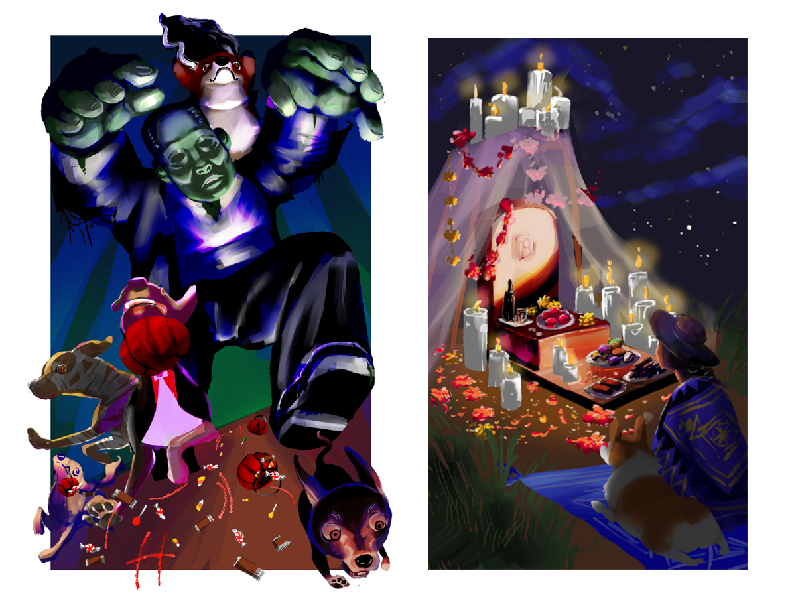
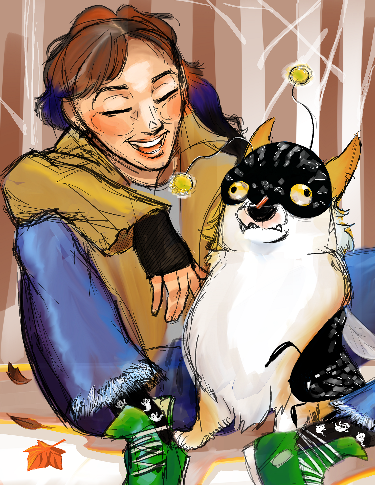
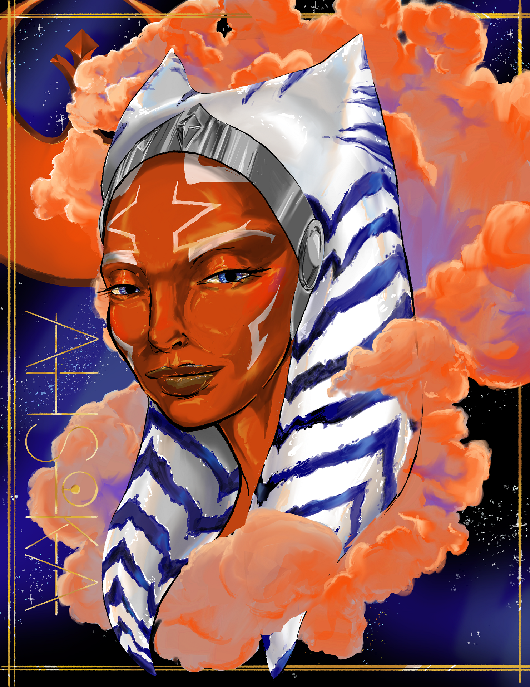
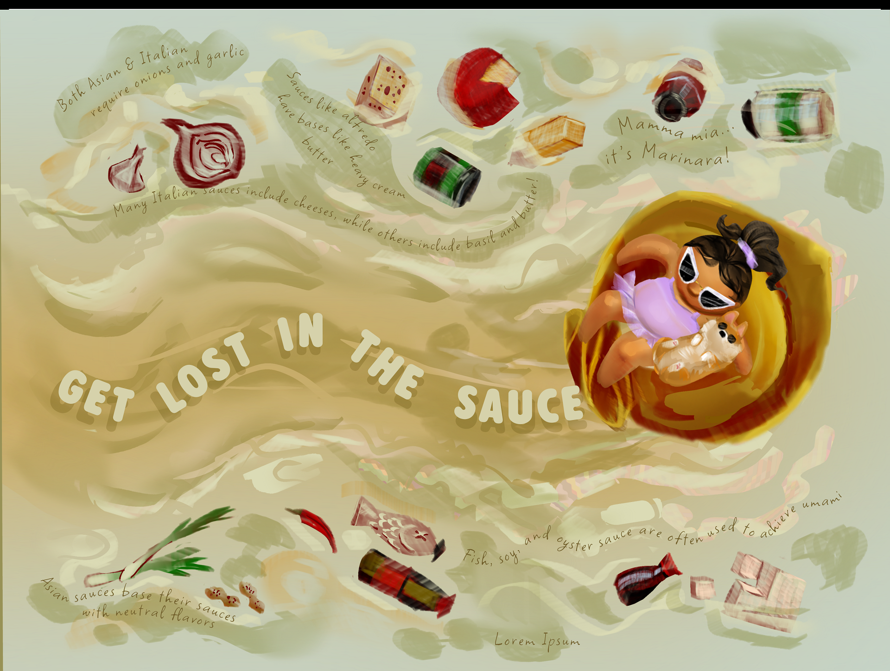